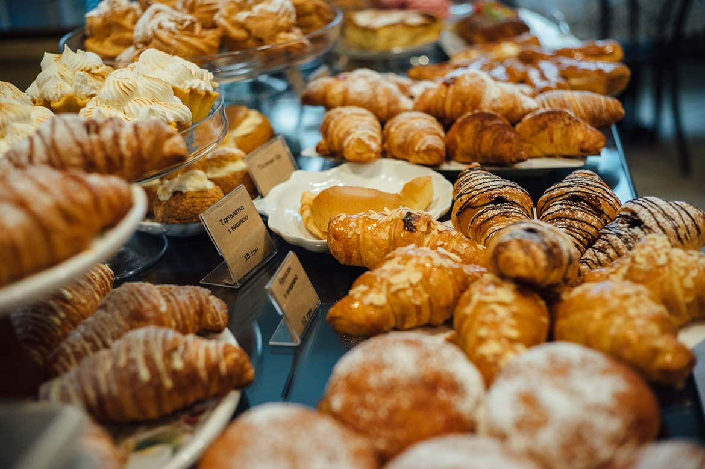
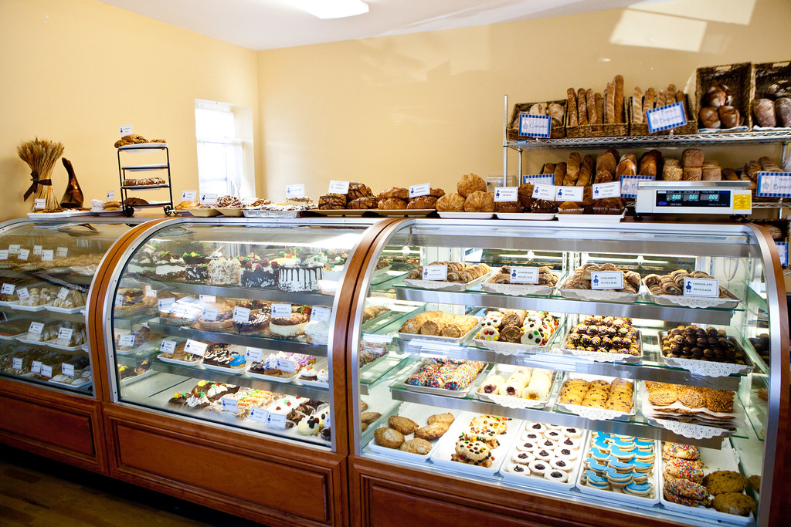
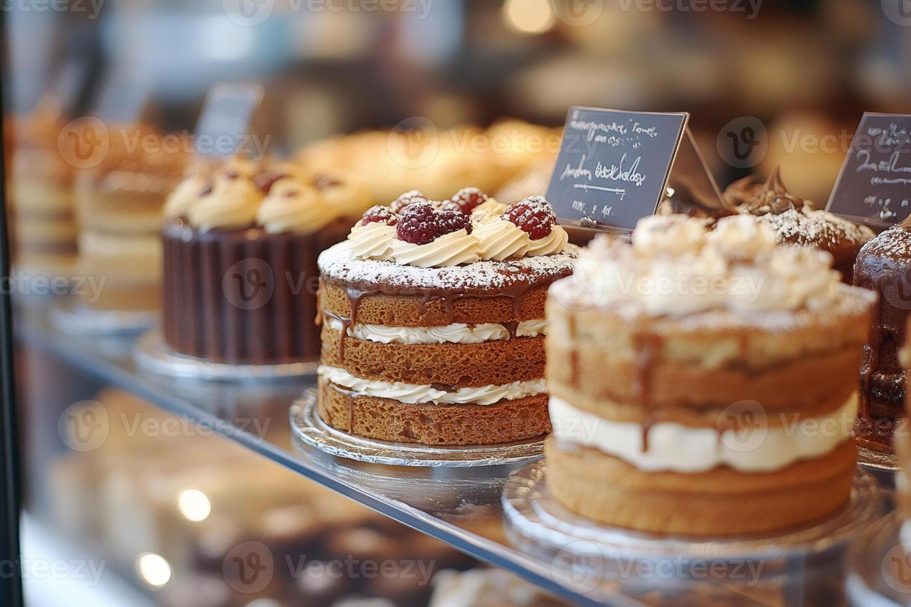

Baked fresh daily
Croissants, danishes and loaves, ready from opening.
Local Café is a cosy neighbourhood spot in Moorabbin. Pull up a seat for specialty coffee, fresh bakes and food made each day.

We opened Local Café for the people who live and work around Moorabbin. Coffee enthusiasts, locals, visitors and students all find a table here.
Our beans are roasted in small batches, our pastries come out of the oven every morning, and the door is always open for a chat.

Croissants, danishes and loaves, ready from opening.

A rotating cabinet to go with your flat white.
| Day | Hours |
|---|---|
| Monday to Friday | 7:00am – 3:00pm |
| Saturday | 8:00am – 4:00pm |
| Sunday | 8:00am – 4:00pm |
42 Station Street, Moorabbin VIC 3189. A short walk from the station, with street parking nearby.